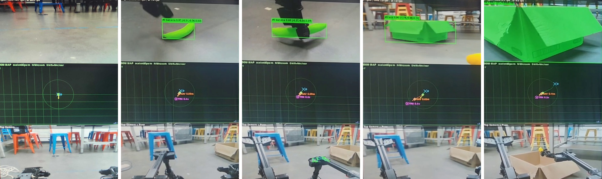
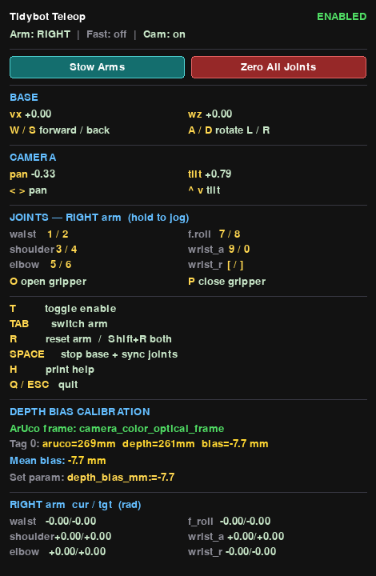
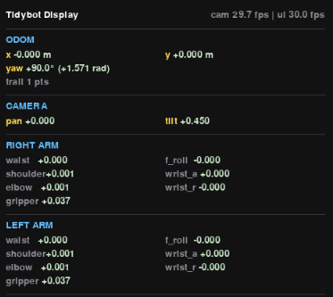
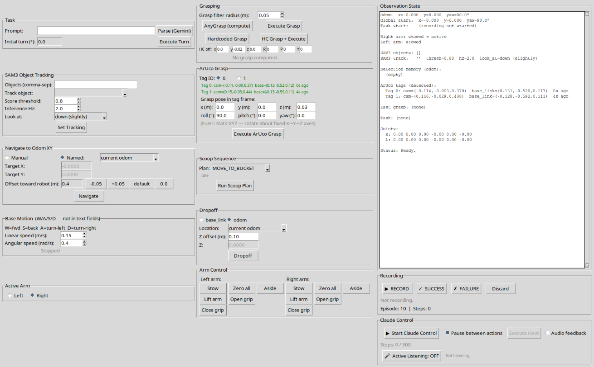

Collaborative Robotics · Winter 2026
Bimanual Granular Scooping
A dual-armed mobile robot that perceives objects through RGB-D sensing, plans grasps in 3D, navigates autonomously, and scoops granular materials using coordinated two-arm control.
Listed alphabetically
Overview
We demonstrate object manipulation, navigation-integrated grasping, and coordinated dual-arm candy scooping with tool use, in simulation and in the real world.
Task 3. Bimanual candy scooping in simulation.
Tasks 1 & 2. Manipulation and locomotion simulation
Tasks 1 & 2. Manipulation and locomotion with real robot
System Pipeline
The control architecture connects perception, navigation, grasp planning, and a high-level controller. An initial state-machine approach was replaced by an LLM-powered controller (Claude Opus 4.6).
Initial: State Machine + Vosk
Final: Claude Opus Controller
Figure 1. System pipeline — perception, navigation, and grasp modules feed into a high-level controller (state machine or large language model).
Manipulation & Locomotion
Dual-arm pick-and-place powered by RGB-D perception, real-time tracking, and autonomous navigation. AnyGrasp processes depth and color data to generate 6-DOF grasp poses, while SAM3 provides segmentation masks for continuous object tracking as the arms move. A PID-based controller handles straight-line path following and turning, coordinating base locomotion with arm manipulation.
Key Components
- AnyGrasp server — generates 6-DOF grasp poses from RGB-D point clouds
- Iterative Closest Point (ICP) — aligns point clouds across frames for accurate grasp pose registration
- SAM3 tracker — provides segmentation masks for continuous object tracking with PID control
- PID navigation controller — handles straight-line path following and turning for autonomous locomotion
- Grasp detection — converts segmentation masks to gripper orientation for reliable picks

Figure 2. Sequence of manipulation actions on the real robot — CV detection, object tracking, navigation, and task execution.

Figure 3a. AnyGrasp point cloud with grasp pose for a banana.

Figure 3b. AnyGrasp point cloud with grasp pose for a cube.
Scooping Granular Objects
Full candy scooping pipeline: the robot grasps a scoop and bucket, navigates to a candy box, scoops the candy, and transfers it to the bucket. This integrates bimanual grasping, autonomous navigation, and coordinated tool use in one continuous sequence.
Candy Scooping Pipeline
Figure 4. Candy scooping pipeline with six coordinated steps.
Key Components
- ArUco detection node — locates the scoop and bucket using ArUco fiducial markers
- Execute grasp server — coordinates bimanual grasp sequences
- Waypoint trajectories — arm paths for scooping and transfer motions

Figure 5a. Bimanual candy scooping scene setup.

Figure 5b. ArUco tag-based pose estimation for tool localization.

Figure 5c. Scooping perspective during candy pickup.
Development & Debugging Tools
Custom tools for visualizing sensor streams, diagnosing perception failures, and validating grasp plans before deploying to hardware.

Figure 6a. Teleoperation interface for manual robot control.

Figure 6b. Real-time sensor and state display.

Figure 7. Custom GUI for debugging and pipeline control.
Audio Tool
Figure 8. Audio interface for voice-controlled interaction.